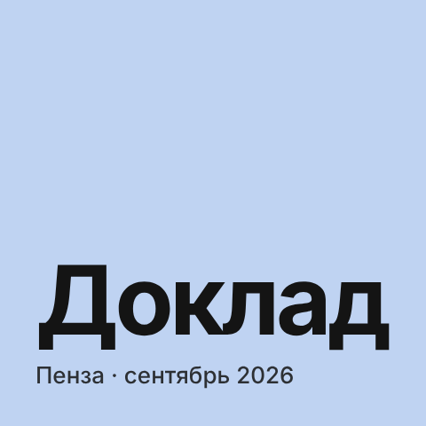
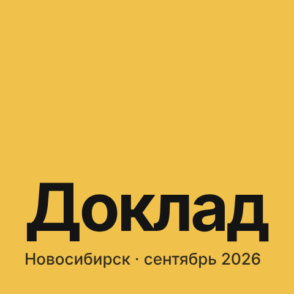
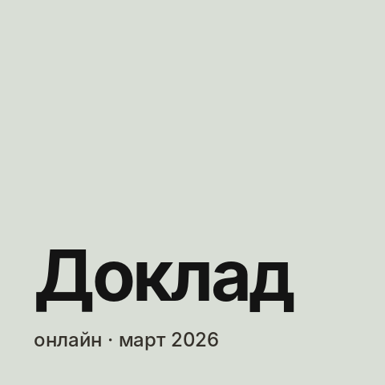
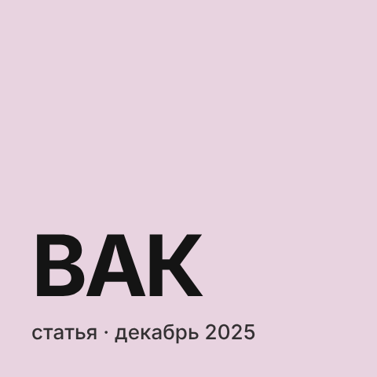
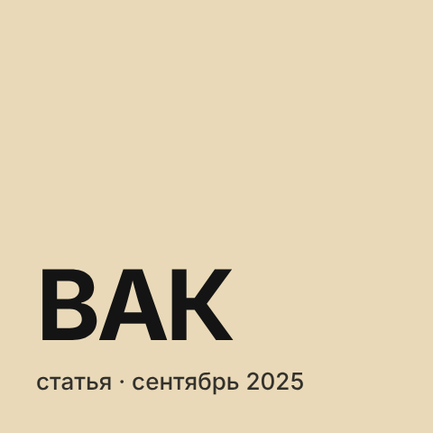

Все теги
#исследования
6 постов
-

Доклад в Пензе — готовы ли российские компании к ИИ в менеджменте 10 сентября 2026 года — доклад на XVI Международной научно-практической конференции «Развитие современной науки и образования: актуальные вопросы, достижения и инновации» (Пенза): «Организационная готовность российских компаний к внедрению искусственного интеллекта в систему менеджмента: барьеры и направления развития». -

Доклад о том, как банку снижать риски ИИ — от ответственности до дорожной карты 7 сентября 2026 года — доклад на CX Международной научно-практической конференции «Актуальные вопросы экономических наук и современного менеджмента» (Новосибирск): «Организационно-управленческие механизмы снижения рисков применения искусственного интеллекта в банковском менеджменте». -

Доклад на международной конференции — что нужно компании, чтобы ИИ работал 4 марта 2026 года выступил с докладом на CIV Международной научно-практической конференции «Актуальные вопросы экономических наук и современного менеджмента» (Новосибирск). Тема — «Технологические требования к инфраструктуре компании при внедрении искусственного интеллекта». -

Статья о рисках и ограничениях ИИ в управлении — на примере банков Вышла моя третья статья ВАК — «Риски и ограничения применения искусственного интеллекта в управлении компанией» в журнале «Экономика и управление: проблемы, решения» (2025, № 10). Это самая близкая к моей работе тема: я делаю сервис с ИИ-агентом в банке. -

Статья о трендах ИИ в корпоративном управлении — от генеративных моделей до агентов В журнале «Финансовый менеджмент» (№ 10, 2025) вышла моя вторая статья — «Современные тенденции использования искусственного интеллекта в корпоративном управлении в период цифровой трансформации». -
 Первая статья ВАК — как российские компании применяют ИИ в менеджменте
Вышла моя первая научная статья — «Характерные особенности применения искусственного интеллекта в менеджменте российских компаний» в журнале «Экономика и управление: проблемы, решения» (2025, т. 7, № 6).
Первая статья ВАК — как российские компании применяют ИИ в менеджменте
Вышла моя первая научная статья — «Характерные особенности применения искусственного интеллекта в менеджменте российских компаний» в журнале «Экономика и управление: проблемы, решения» (2025, т. 7, № 6).